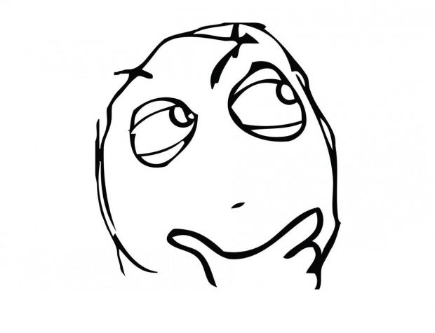

jQuery/Web Development Advanced
jQuery Review
What code should you always wrap your jQuery in?
$(document).ready(function(event){
// jQuery code goes in here
});
Updating CSS Styles with jQuery
The .css() method can handle any CSS changes in jQuery.
$('h1').css('font-size', '30px');
$('#header').css({
height: '300px',
background: '#333'
});
The first line of code above shows you how to update a single CSS property, in this case we're updating the h1 tag and changing the font-size to 30px.
The second section shows you how to update multiple CSS properties at once.
Enough Talk: Let's Code!
Using the .css() method, update the CSS of an element.
Onclick Function
One of the most commonly used events is the click event. The click event is a method that gets triggered whenever someone clicks on the HTML element that is declared at the beginning of the click event method.
HTML:
<button>Click here to reveal the text</button>
<p class="favorite-food">
Your secret text here
</p>
CSS:
.favorite-food {
display: none;
}
Add the above code to your HTML
Adding the Onclick Event
In the below jQuery, we are creating an event that will go off whenever someone clicks on a button HTML element.
$('button').click(function(event){
$('.favorite-food').css('display', 'block');
});
When they click on it, this method will go after the element with a CLASS of .favorite-food and change it from display none to block.
Enough Talk: Let's Code!
Use the button click event to change the text color of an HTML element.
What's a hamburger menu?
A hamburger menu is simply 3 bars in a row from top to bottom. It is an icon that has become known to show a site's menu when you click on it.
Download your hamburger menu icon
Go to http://www.bizstreamacademy.com and go to the Resources page.
At the bottom of the page, right click on the menu-icon-white.png OR menu-icon-black.png. If you have a dark colored background, choose white, otherwise choose black. Then from the dropdown chooose "Save link as..." and navigate to your project folder.
Hamburger menu HTML
Add the following code to your HTML, above your menu HTML
<div class="toggle-menu">
<img src="menu-icon-white.png" />
</div>
The img tag here is your hamburger menu you downloaded. Then we wrap that in a div with a class of toggle-menu. We'll use that class in a minute to active our mobile menu.
Hamburger menu only on mobile?
Right now the hamburger menu is always there, but we really only want to see it on mobile.
Add the following CSS to your style.css file.
.toggle-menu {
display: none;
}
Active menu icon and hide menu
Now that the mobile menu icon is hidden on desktop, we need to display it on mobile and hide the menu itself.
Add the following CSS to your mobile.css file:
.toggle-menu {
display: block;
float: right;
margin-top: 30px;
}
#menu {
display: none;
}
Desktop = menu shows, hamburger menu icon hidden
Mobile = menu hidden, hamburger menu icon shows
But the icon does nothing?
If only we had a way to do SOMETHING to get the menu to appear?!
Any guesses?
Toggling the Menu
The following code will execute when you click on the div with class toggle-menu. Then it will toggle the menu on and off.
$('.toggle-menu').click(function() {
$('#menu').slideToggle();
});
The slideToggle command in jQuery is used to turn the display of an HTML element on and off.
Enough Talk: Let's Code!
Want to style your mobile menu more? Or ask a question? Take a little bit of time to catch up :)
Questions?